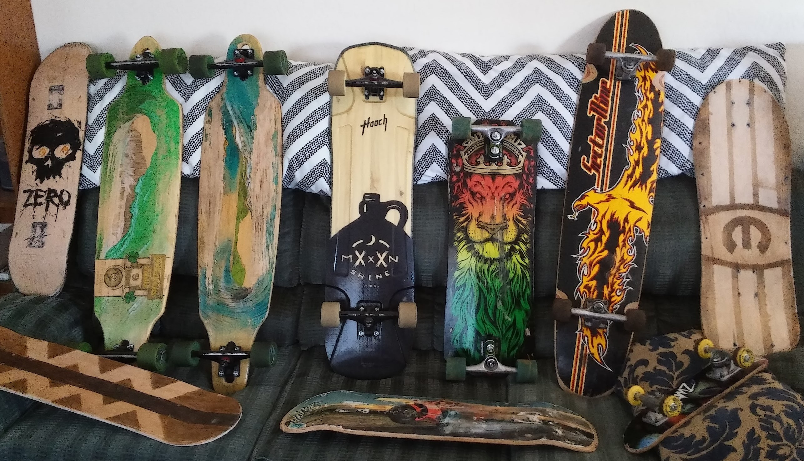

Welcome to My Website
Here, you can find everything that's relevant to me and my life. This includes my professional achievements as well as content that's more personal. As a brief introduction: I am a highly motivated individual who recently finished a degree in computer science. In addition to computer science, I am interested in engineering and mathematics. I am currently living in Flagstaff, Arizona, and am actively seeking employment there.
To start, I encourage you to check out my projects page to see what I've been working on! If you're more interested in my professional experiences and volunteer efforts, see the documents page. My about page goes into more detail about who I am and what my skills are. Finally, the settings page allows you to customize this website's appearance.
